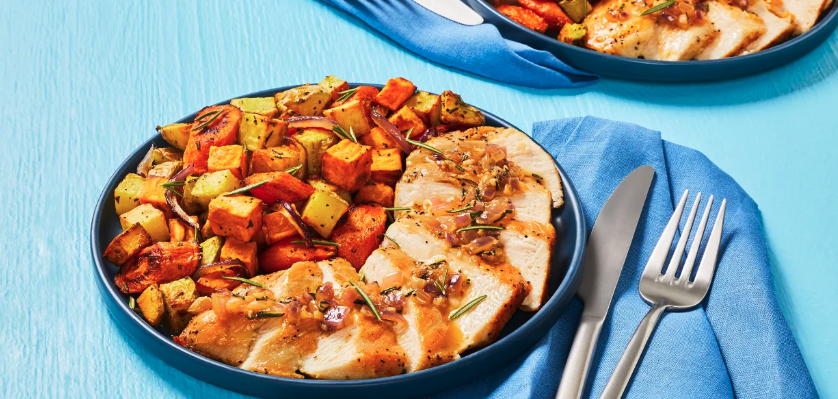

Garlic Rosemary Chicken
with Roasted Root Veggies

Description
If it existed, our chefs would most definitely join the Garlic Lovers Club: a judgment-free zone where all things allium are rightfully celebrated. For you fellow enthusiasts out there, they created a rich garlic and rosemary pan sauce that’s sure to satisfy. This creamy concoction is spooned atop crispy pan-fried chicken breasts and accompanied by a mix of roasted carrots, onions, and two kinds of potatoes infused with another beloved flavoring—rosemary.
Ingredients
- Carrots - 6 oz
- Sweet Potato - 1
- Potatoes - 5
- Rosemary - 1
- Red Onion - 1
- Chicken Breasts - 10 oz
- Garlic - 2 cloves
- Chicken Stock Concentrate - 1 packet
- Cooking Oil, Butter, Salt, Pepper, Flour
Steps
- Preheat oven to 450 degrees. Wash and dry produce. Trim, peel, and cut carrots on a diagonal into ¾-inch-thick pieces. Dice sweet potato and potatoes into ½-inch pieces. Strip rosemary leaves from half the sprigs; finely chop leaves until you have 1½ tsp (3 tsp for 4 servings—save remaining sprigs for garnishing if you like).
- Toss carrots, sweet potato, and potatoes on a baking sheet with 1 tsp chopped rosemary (2 tsp for 4 servings), a large drizzle of oil, and a pinch of salt and pepper. (For 4, divide veggies between 2 sheets.) Roast until slightly softened, 15 minutes (you’ll add the onion then).
- While veggies roast, halve, peel, and thinly slice onion. Finely chop a few slices until you have ¼ cup (½ cup for 4 servings). Peel and finely chop garlic.
- Pat chicken dry with paper towels; season with salt and pepper. Sprinkle all over with 1 TBSP flour (2 TBSP for 4 servings). Heat a large drizzle of oil in a large pan over medium-high heat. Add chicken and cook until browned and cooked through, 5-6 minutes per side. Turn off heat; transfer to a cutting board. Wipe out pan.
- While chicken cooks, in a small bowl, combine sliced onion, a drizzle of oil, and a pinch of salt and pepper. Once veggieshave roasted 15 minutes, remove sheet from oven. Carefully top veggies with seasoned onion, then return to oven until everything is browned and tender, 12-15 minutes more.
- Meanwhile, heat a drizzle of oil in pan used for chicken over medium-high heat. Add chopped onion, garlic, remainingchopped rosemary, salt, and pepper. Cook, stirring, until softened, 2-3 minutes. Add stock concentrate and ¼ cup water(⅓ cup for 4 servings). Simmer until thickened, 2-3 minutes. Remove from heat; stir in 1 TBSP butter (2 TBSP for 4) until melted. Thinly slice chicken crosswise; divide between plates along with roasted veggies. Top chicken with pan sauce. (If you like, garnish with reserved rosemary sprigs for some flair!)